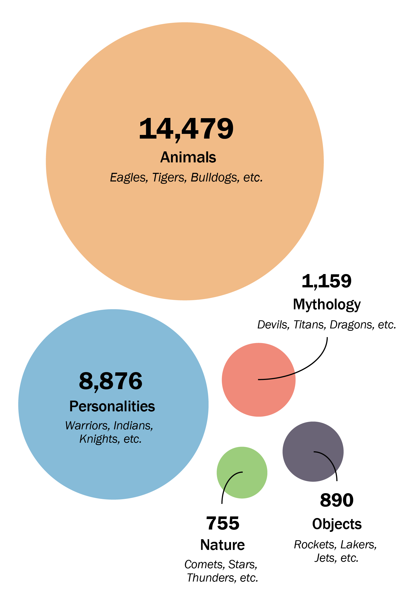

Tooth and Claw
In American sports, mascots serve as symbols, weapons and sources of power. Most of them are animals.
By PETER GEORGIEV / Missourian
Sources: MascotDB, Roy Yarbrough, BBC
Eagles and tigers dominate
Animals rule the kingdom of sports, according to an analysis of 42,092 names collected by Terry Borning, the creator of MascotDB. These are the most popular symbols among high-school, college and professional teams in the United States.

How the top 100 break down
When it comes to choosing a name, striking fear into the enemy’s heart is an essential requirement. Here are the five sources teams are most likely to draw inspiration from when forging a striking identity.
